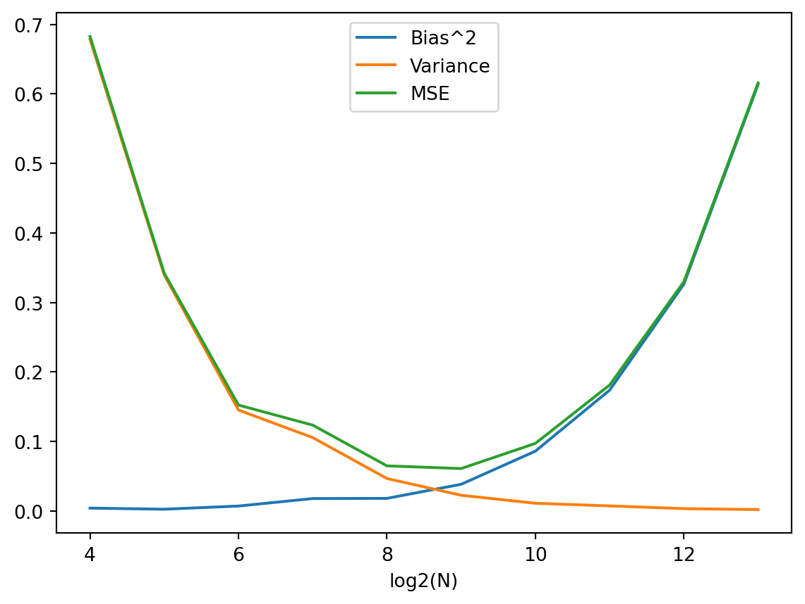

import numpy as np
def BarrierOptionsPrice(s, k, t, b, r, std, UpDown, InOut, CallPut, n=10000,m=250):
'''
s : underlying price at t=0
k : strike price
t : maturity (year)
b : barrier price
r : risk-free rate (annualization, 1%=0.01)
std : standard deviation of underlying return (annualization, 1%=0.01)
UpDown : Up is "U", Down is "D" (should be capital)
InOut : In is "I", Out is "O" (should be capital)
CallPut : Call is "C", Put is "P" (should be capital)
n : number of simulation
m : number of euler-discrete partition
'''
dt = t/m
z = np.random.standard_normal( m*n ).reshape(n,m)
underlying_path = s*np.exp((r-0.5*(std**2))*dt+std*np.sqrt(dt)*z).cumprod(axis=1)
if UpDown=="U" and InOut=="O" :
payoff_logic = underlying_path.max(axis=1)<=b
elif UpDown=="U" and InOut=="I" :
payoff_logic = underlying_path.max(axis=1)>b
elif UpDown=="D" and InOut=="O" :
payoff_logic = underlying_path.min(axis=1)>=b
elif UpDown=="D" and InOut=="I" :
payoff_logic = underlying_path.min(axis=1)<b
if CallPut=="C" :
plain_price = np.maximum(underlying_path[:,-1]-k,0)*np.exp(-r*t)
elif CallPut=="P" :
plain_price = np.maximum(k-underlying_path[:,-1],0)*np.exp(-r*t)
barrier_simulation = payoff_logic * plain_price
barrier_price = barrier_simulation.mean()
barrier_se = barrier_simulation.std(ddof = 1) / np.sqrt(n)
return barrier_price, barrier_se시뮬레이션 과제1 수정 (베리어옵션)
20249132 김형환
Question

Answer 1
파라미터 및 알고리즘
먼저, MCS를 이용한 베리어옵션의 가격 계산에 필요한 파라미터는 아래와 같습니다.
s : 기초자산의 가격
k : 옵션의 행사가격
t : 옵션의 만기(연)
b : 옵션의 베리어
r : 무위험 금리
std : 기초자산의 변동성(표준편차)
UpDown : "U"이면 기초자산이 베리어보다 크면 knock, "D"이면 작으면 knock
InOut : "I"이면 Knock-in, "O"이면 Knock-out
CallPut : "C"이면 콜옵션, "P"이면 풋옵션
n : 시뮬레이션의 반복 횟수
m : 기초자산의 가격 관측 횟수
seed(=0) : 난수 생성의 최초 시드값위 파라미터를 이용해 베리어옵션 가격 산출 함수를 구성할 계획이며, 알고리즘은 아래와 같습니다.
- GBM을 따르는 기초자산의 가격 경로 n개를 이산오일러 근사를 통해 구성
- 하나의 경로는 m개의 관측기준점에 따라 나누어지며, 초기값 S0를 제외한 m개로 이루어짐. (전체 n*m matrix)
- 각각의 경로에 대하여, 기초자산 기준값과 베리어를 비교하여 옵션 pay-off 발생 여부 판단
- Up and Out : 기준값의 최대값이 베리어보다 작거나 같은 경우, pay-off 발생
- Up and In : 기준값의 최대값이 베리어보다 큰 경우, pay-off 발생
- Down and Out : 기준값의 최소값이 베리어보다 크거나 같은 경우, pay-off 발생
- Down and In : 기준값의 최소값이 베리어보다 작은 경우, pay-off 발생
- pay-off가 없으면 옵션가치는 0, 있으면 Call/Put 종류에 따라 pay-off를 계산하고, 그 현재가치가 하나의 경로의 옵션의 가치
- n개의 경로에 대해 옵션의 가치를 모두 산출하고, 산술평균하여 최종적으로 베리어옵션의 가격(및 Standard error) 산출
이에 따른 Python 코드는 아래와 같습니다.
Python 구현
Analytic Solution과 비교
해당 코드를 이용하여 베리어옵션 가격을 추정할 수 있으며, 이를 예재(QuantLib)의 결과값과 비교해보겠습니다.
시뮬레이션 파라미터는 n=10000, m=250으로 설정하였습니다.
import QuantLib as ql
S = 100; r = 0.03; vol = 0.2; T = 1; K = 100; B = 120; rebate = 0
barrierType = ql.Barrier.UpOut; optionType = ql.Option.Call
#Barrier Option
today = ql.Date().todaysDate(); maturity = today + ql.Period(T, ql.Years)
payoff = ql.PlainVanillaPayoff(optionType, K)
euExercise = ql.EuropeanExercise(maturity)
barrierOption = ql.BarrierOption(barrierType, B, rebate, payoff, euExercise)
#Market
spotHandle = ql.QuoteHandle(ql.SimpleQuote(S))
flatRateTs = ql.YieldTermStructureHandle(ql.FlatForward(today, r, ql.Actual365Fixed()))
flatVolTs = ql.BlackVolTermStructureHandle(ql.BlackConstantVol(today, ql.NullCalendar(), vol, ql.Actual365Fixed()))
bsm = ql.BlackScholesProcess(spotHandle, flatRateTs, flatVolTs)
analyticBarrierEngine = ql.AnalyticBarrierEngine(bsm)
#Pricing
barrierOption.setPricingEngine(analyticBarrierEngine)
QL_UOCprice = barrierOption.NPV()
# Hyeonghwan Pricing
HH_UOCprice, HH_UOCse = BarrierOptionsPrice(S, K, T, B, r, vol, "U", "O", "C")
print("Up & Out Call with S=100, K=100, B=120, T=1, Vol=0.2, r= 0.03","\n",
"QuantLib price :", QL_UOCprice,"\n",
"Hyeonghwan price :", HH_UOCprice,"\n",
"Difference is", QL_UOCprice - HH_UOCprice)Up & Out Call with S=100, K=100, B=120, T=1, Vol=0.2, r= 0.03
QuantLib price : 1.155369999815115
Hyeonghwan price : 1.3186174663113233
Difference is -0.16324746649620825다음은 동일한 파라미터를 이용하여 Up and In Call Barrier Option price를 비교하였습니다.
Up & In Call with S=100, K=100, B=120, T=1, Vol=0.2, r= 0.03
QuantLib price : 8.258033384037908
Hyeonghwan price : 8.306949396350575
Difference is -0.048916012312666624비교결과, 대체로 유사하였으나 오차가 상당수준 발생하였습니다.
Up&Out에서는 MCS의 결과값이 크고 Up&In에서는 Analytic form의 결과값이 큰 경향이 있는데,
이는 이산-오일러 근사을 통해 Continuous 구간을 m개(discrete)로 나누면서 발생한 것으로 추정됩니다.
(모형 이산화 오류(Model Discretization Error)로 인해 편의(Bias) 발생)
즉, 실제 베리어 Knock 여부는 기초자산의 연속적인 가격흐름을 모두 관측하여 판단해야하지만,
이산화 과정에서 m번만 관측(m=250은 1일에 1번꼴)하게 되면서 그 사이의 가격을 관측할 수 없게 됩니다.
이로 인해 Knock-out 방식의 옵션은 고평가되고, Knock-in 방식의 옵션은 저평가되는 결과가 나타납니다.
이러한 편의는 m이 커질수록 작아져서 0으로 수렴하게 되며, 이에 대해서는 Answer3에서 다루겠습니다.
Answer 2
In-Out parity 정의
베리어옵션의 In-Out parity란, 특정 상황에서 베리어옵션과 plain vanilla option의 가격 사이에 성립하는 등식을 말합니다.
구체적으로 plain vanilla call option이 \(c_{plain}=f(S,K,T,r,\sigma,d)\)로 주어져있고,
베리어 B를 Knock할 때, 위 옵션과 동일한 pay-off를 제공하는 베리어옵션을 \(c_{In}\), \(c_{Out}\)라고 한다면,
이들 옵션 사이에는 아래와 같은 등식이 성립하게 됩니다.
\[c_{In}+c_{Out}=c_{plain}\]
이는 풋옵션에서도 동일하게 성립되며, 일반적인 유로피안 옵션은 Knock-In + Knock-Out 배리어옵션으로 분해할 수 있다는 의미가 됩니다.
증명
예시를 통해 In-Out parity가 성립함을 쉽게 알 수 있습니다.
배리어가 B로 동일한 Knock-In & Out 옵션을 각각 I와 O라고 하겠습니다.
I는 lookback period동안 기초자산의 가격이 B를 한번이라도 Knock하는 경우 payoff가 발생합니다. (Up & Down 포괄)
O는 lookback period동안 기초자산의 가격이 B를 한번이라도 Knock하지 않는 경우 payoff가 발생합니다.
따라서, 기간동안 Knock가 발생하면 I는 payoff가 발생하고 O는 payoff가 0이 되며,
Knock가 발생하지 않으면 I는 payoff가 0이 되고 O는 payoff가 발생합니다.
즉, I+O로 구성된 배리어옵션 포트폴리오를 생각하면 모든 기초자산의 가격범위에 대하여 payoff가 한번 발생하고
해당 payoff는 plain vanilla 옵션의 payoff와 동일하므로 In-Out parity가 성립하게 됩니다.
이를 수식으로 표현하면 아래와 같습니다.
\(c_{In}+c_{Out}=E^Q[e^{-rT}(S_T-K)^+\mathbb{I}_{(\exists S_t\geq B)}]+E^Q[e^{-rT}(S_T-K)^+\mathbb{I}_{(\forall S_t< B)}]\)
\(\;\;\;\;\;\;\;\;\;\;\;=E^Q[e^{-rT}(S_T-K)^+](\mathbb{I}_{(\exists S_t\geq B)}+\mathbb{I}_{(\forall S_t<B)})=E^Q[e^{-rT}(S_T-K)^+]\)
\(\;\;\;\;\;\;\;\;\;\;\;=c_{plain}\;where\;\mathbb{I}_A=1\;if\;A\;is\;true\;else\;0\)
이는 MCS방식으로 베리어옵션을 가치평가를 할 때에도 쉽게 알 수 있는데,
위 python코드에서 베리어옵션의 종류에 따라 payoff 발생여부를 판별할 때 사용한 if문에서
In, Out의 차이는 동전던지기의 앞뒷면처럼 상호배타적(mutually exclusive)임을 알 수 있습니다.
MCS에서의 활용
한종류의 베리어옵션과 plain 옵션의 가격을 알고 있다면 다른 한 종류의 베리어옵션의 가격이 결정되므로,
MCS를 이용하여 베리어옵션의 가격을 계산할 때 두번의 시뮬레이션을 한번으로 축소할 수 있을 것으로 생각해볼 수 있습니다.
그러나, 이는 현재 위 코드가 사전에 In, Out을 지정하고 한 경우에 대해서 return값을 반환하기 때문인데
이를 수정하여 Input으로 In, Out을 지정하지 않고 함수 내에서 In, Out 결과값을 각각 반환하게 한다면
시뮬레이션의 축소효과는 사라지게 됩니다.
더 나아가, 한번의 GBM경로를 생성하는 것에서 plain vanilla call&put, 배리어 In&Out, Up&Down옵션의 가격을
모두 산출할 수 있으므로 parity를 이용하여 시뮬레이션 시간을 극적으로 단축하기는 어려울 것 같습니다.
이외에도 산출된 결과값들끼리 parity를 이용해 적정성 여부를 검증하는 용도로는 활용성이 있을 것 같습니다.
이때에도, parity가 성립하려면 bsm fomula를 통한 plain vanilla옵션이 아닌,
베리어옵션과 동일한 이산오일러근사를 사용한 plain vanilla옵션의 가격을 사용해야 합니다.
Answer 3
N, M에 따른 bias와 variance의 변화를 살펴보겠습니다.
이를 살펴보기 위해 시뮬레이션 결과값인 베리어옵션가격. 즉, 표본평균 \(\bar y\)의 분포를 이용하면 됩니다.
CLT에 따라 베리어옵션가격의 분포는 \(\bar y\sim N(y_{real}, \frac{\sigma^2}{N})\)를 따르게 되므로,
\(Bias^2=(E[\bar y]-y_{real})^2\), \(Variance=E[(\bar y-E[\bar y])^2]\)가 됩니다.
이제, 주어진 N, M의 값에 대하여 K번 시뮬레이션을 반복하여 이를 계산하면 되며,
계산의 효율화를 위해 편의와 분산은 아래와 같이 근사값으로 계산하여도 무방합니다.
\(Bias^2\approx (\bar y-y_{real})^2\)
\(Variance=Var[\bar y]=\frac{\sigma^2}{N}\approx \frac{s^2}{N}=S.E^2\)
\(y_{real}\)은 QuantLib의 결과값이라고 가정하고, Up&Out call옵션을 예시로 위의 결과를 살펴보겠습니다.
import time
import pandas as pd
y_real = QL_UOCprice
M = 50
Ns, bias, var, cal = np.zeros(10), np.zeros(10), np.zeros(10), np.zeros(10)
for i in range(10):
start = time.time()
N = (i+1)*1000
y, y_se = BarrierOptionsPrice(S, K, T, B, r, vol, "U", "O", "C", n=N, m=M)
Ns[i] = N
bias[i] = (y-y_real)**2
var[i] = y_se**2
end = time.time()
cal[i] = end-start
result = pd.DataFrame({"N":Ns,"M":M,'Bias^2':bias,'Variance':var,'MSE':bias+var,"time":cal})
result| N | M | Bias^2 | Variance | MSE | time | |
|---|---|---|---|---|---|---|
| 0 | 1000.0 | 50 | 0.174447 | 0.014535 | 0.188983 | 0.001879 |
| 1 | 2000.0 | 50 | 0.061209 | 0.006343 | 0.067553 | 0.003509 |
| 2 | 3000.0 | 50 | 0.076219 | 0.004238 | 0.080458 | 0.004763 |
| 3 | 4000.0 | 50 | 0.082926 | 0.003214 | 0.086140 | 0.006782 |
| 4 | 5000.0 | 50 | 0.146093 | 0.002821 | 0.148913 | 0.008028 |
| 5 | 6000.0 | 50 | 0.101963 | 0.002224 | 0.104187 | 0.009470 |
| 6 | 7000.0 | 50 | 0.089587 | 0.001899 | 0.091486 | 0.011028 |
| 7 | 8000.0 | 50 | 0.086099 | 0.001705 | 0.087804 | 0.012743 |
| 8 | 9000.0 | 50 | 0.075407 | 0.001430 | 0.076837 | 0.014348 |
| 9 | 10000.0 | 50 | 0.095189 | 0.001313 | 0.096502 | 0.015797 |
N을 증가시킬수록 시뮬레이션의 분산은 감소하며, 편의의 증감추세는 관측되지 않았습니다.
N = 1000
Ms, bias, var, cal = np.zeros(10), np.zeros(10), np.zeros(10), np.zeros(10)
for i in range(10):
start = time.time()
M = (i+1)*50
y, y_se = BarrierOptionsPrice(S, K, T, B, r, vol, "U", "O", "C", n=N, m=M)
Ms[i] = M
bias[i] = (y-y_real)**2
var[i] = y_se**2
end = time.time()
cal[i] = end-start
result = pd.DataFrame({"N":N,"M":Ms,'Bias^2':bias,'Variance':var,'MSE':bias+var,"time":cal})
result| N | M | Bias^2 | Variance | MSE | time | |
|---|---|---|---|---|---|---|
| 0 | 1000 | 50.0 | 0.118744 | 0.014253 | 0.132997 | 0.001744 |
| 1 | 1000 | 100.0 | 0.054546 | 0.012488 | 0.067034 | 0.003330 |
| 2 | 1000 | 150.0 | 0.079737 | 0.012784 | 0.092522 | 0.005500 |
| 3 | 1000 | 200.0 | 0.071303 | 0.013702 | 0.085005 | 0.006731 |
| 4 | 1000 | 250.0 | 0.010663 | 0.011333 | 0.021995 | 0.007996 |
| 5 | 1000 | 300.0 | 0.021461 | 0.011753 | 0.033214 | 0.009624 |
| 6 | 1000 | 350.0 | 0.035468 | 0.011516 | 0.046985 | 0.011191 |
| 7 | 1000 | 400.0 | 0.030213 | 0.011155 | 0.041368 | 0.012771 |
| 8 | 1000 | 450.0 | 0.026262 | 0.012420 | 0.038682 | 0.014650 |
| 9 | 1000 | 500.0 | 0.001335 | 0.010056 | 0.011391 | 0.015959 |
M을 증가시킬수록 시뮬레이션의 편의는 감소하며, 분산은 일정하게 유지되는 추세를 보입니다.
# 산출 신뢰도 향상을 위해각 N,M 별로 시뮬레이션 L번 반복 예정
L = 200
Ns, Ms, bias, var = np.zeros(10), np.zeros(10), np.zeros(10), np.zeros(10)
# 예산제약, N*M = tau, 계산시간이 N, M과 정비례한다고 가정
tau = 2**16
for i in range(10):
N = 2**(i+4)
M = int(np.round(tau / N, 0))
y = []
for j in range(L):
tmp1, tmp2 = BarrierOptionsPrice(S, K, T, B, r, vol, "U", "O", "C", n=N, m=M)
y.append(tmp1)
Ns[i], Ms[i] = N, M
bias[i] = (np.mean(y) - y_real)**2
var[i] = np.var(y,ddof = 1)
result = pd.DataFrame({"N":Ns,
"log2(N)":np.log2(Ns),
"M":Ms,
'Bias^2':bias,
'Variance':var,
'MSE':bias+var})
result.plot(x='log2(N)',y=['Bias^2','Variance','MSE'])
N과 M을 증가시킬수록 계산시간도 증가하므로, 한정된 계산시간 하에 MSE를 최소화하도록 N과 M을 정해야할 필요가 있습니다.